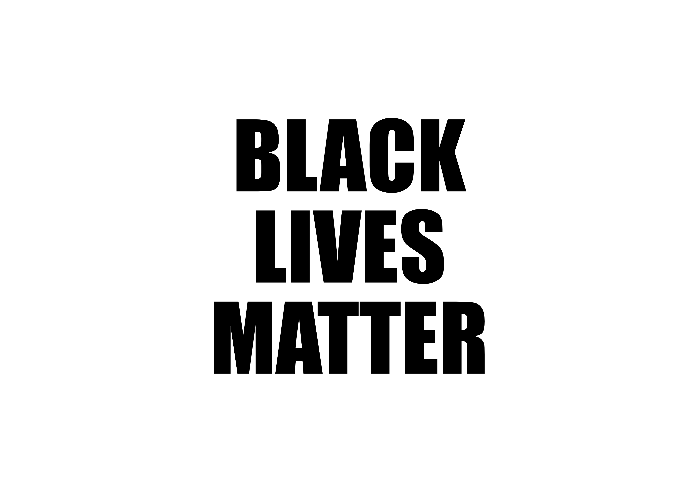

The systems of oppression in this country have run rampant for countless generations.
We, the people, the whole of humanity, cannot allow these systems to survive any longer.
We Must Fight Back.
Make a donation; sign a petition; join a non-profit; get involved.
General Resources + Information
Anti-Racism Resources for White People
#BlackLivesMatter carrd (wonderful collection resources, info, etc)
Organizations + Campaigns
ACLU, the American Civil Liberties Union
BlackLivesMatter.com
Black Visions Collective
NAACP, the National Association for the Advancement of Colored People
SPLC, the Southern Poverty Law Center
We Are Done Dying, campaign by NAACP
Donations + Fundraisers
Split a donation between 70+ community bail funds, mutual aid funds, and racial justice organizers
BCBF, the Brooklyn Community Bail Fund
George Floyd Memorial Fund on GoFundMe
NAACP Legal Defense Fund
NBO, the National Bail Out collective
Petitions + Support
Justice For Big Floyd
Justice For Breonna
Run With Maud
Stand With Bre
Related Causes + Campaigns
Activation Residency
The Bail Project
Black and Pink
BMMA, the Black Mamas Matter Alliance
Critical Resistance
The Ella Baker Center for Human Rights
Fair Fight
The Fortune Society
Free Hearts
JLC, the Juvenile Law Center
Life After Release
The Okra Project
Reclaim the Block
TJFP, the Trans Justice Funding Project
Until Freedom
Vera Institue of Justice
Young Women's Freedom Center



© HARRY WILSON DUNAWAY III 2020